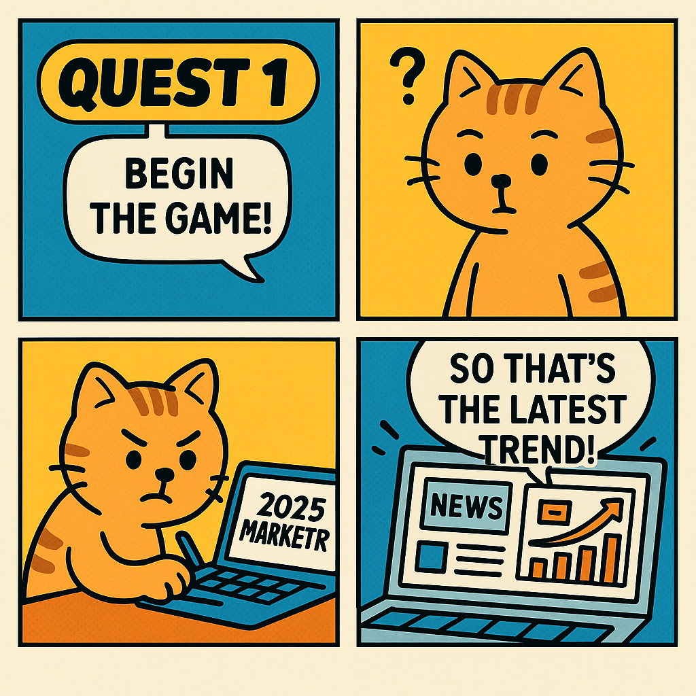

What is popular these days? In this quest, we will explore dining industry trends.

- First, go to the following link and download the : "2024 Food and Dining Industry: 7 Key Issues.pdf", "2025 Food and Dining Industry: 7 Key Issues.pdf" .
- Click https://m365.cloud.microsoft/chat/ to move to Copilot Chat.
-
When you want answers based on documents, you can select file upload in the Copilot Chat prompt area and specify the file. Select the practice files you downloaded in step 2.

- Enter the sample prompts below. Modify the parts in [square brackets] as you like (and remove the brackets themselves).
- Creatively change the [bracketed] content and regenerate until you are satisfied.
🚩 Understanding the Materials
You have found a report on the dining industry. Understand the content of this report and derive insights.
[Sample Prompt]
From the files "2024 Food and Dining Industry: 7 Key Issues.pdf", "2025 Food and Dining Industry: 7 Key Issues.pdf" , summarize the contents and example cases for each major issue.
Summarize the 7 key issues for each year in one sentence each, and organize the similarities and differences by issue in a table.
Among the 2024 and 2025 issues, compare the changes in growth rate, market size, and main growth drivers for [keyword 1] and [keyword 2].